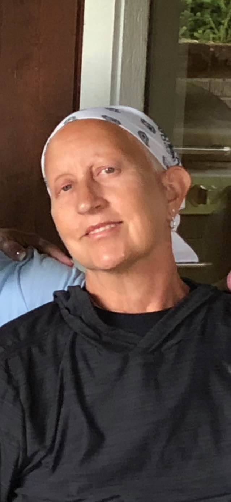

Jen My Friend
This is the story about my friend Jen. I met her through her sister-in-law Kathy. She and her wife Mary own The Giving Lake Ranch a not-for-profit in Fort Calhoun.She has an adult son
named Noah who she loves more than anything in the world.5 years ago, Jen discovered she had breast cancer for the first time. She went to her specialist and went through all the chemo
and radiation they could throw at her cancer, and she walked away cancer-free. Roll the clock forward to 2020 in the middle of a pandemic and Jen goes back to the doctor for a checkup
and discovers cancer has come back with a vengeance. She started chemo and radiation again, her family ever vigilant by her side. Jen is a warrior in the fight against breast cancer. She
lost 50 pounds in weight from throwing up after every treatment and spent days in bed because of the pain. The chemotherapy took away her livelihood. Jen was a leading life coach in
the Omaha area and a professional coach at a large corporation in town making well over 6 figures. Jen won another fight against breast cancer and was recently found cancer-free. What
did Jen get for winning again? She got what they call Chemo Brain. It is a poisoning of the brain from all the cancer-fighting chemicals. I love Jen for being a warrior. I feel sad
that herbrain is so damaged from the fight she can’t remember her own address. The pictures I included are before and after the fight. You can see the transformation, but she survived.
website link: The Giving Lake